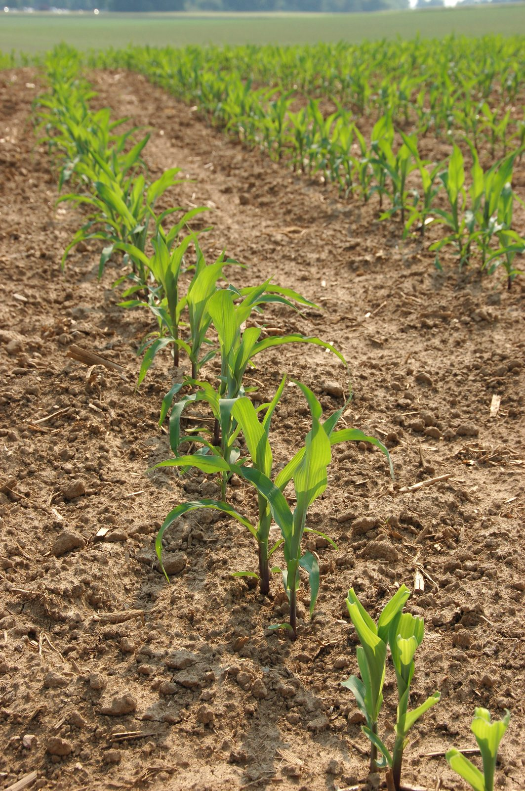
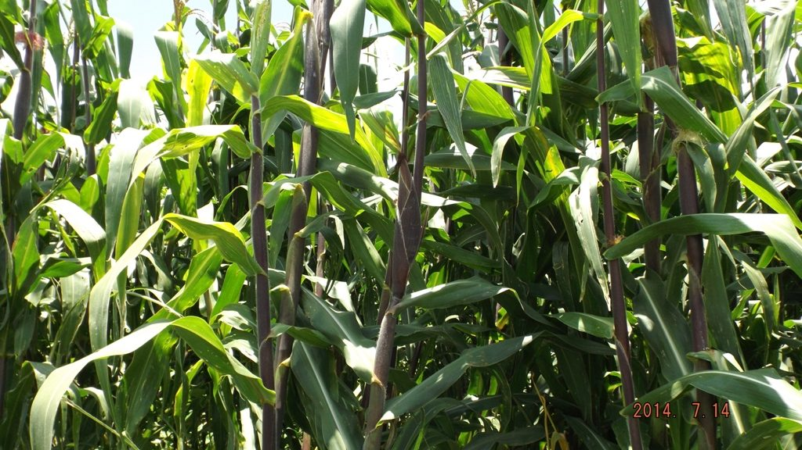

Física de Suelos Saxton & Rawls
Determinación precisa de capacidad de campo (28.4%) y punto de marchitez permanente (15.2%) en perfil Franco-Arcilloso para garantizar enraizamiento y reserva hídrica en el lote.
Anticipe el balance hídrico del cultivo con 45 años de reanálisis satelital ERA5, física de suelos Saxton & Rawls y evaluación económica oficial del MAGA.
Tecnología agrometeorológica y científica para maximizar el rendimiento en Jutiapa.
Etapas bioclimáticas determinantes para el rendimiento del grano de maíz en el Corredor Seco.
Profundidad óptima de 3-5 cm. Germinación en suelo con retención hídrica a capacidad de campo (28.4%) y sin asfixia radicular.
Expansión de hojas verdaderas de V3 a V12. Crecimiento de raíces profundas y absorción gradual de fertilización nitrogenada.
Etapa biológicamente vulnerable a canículas. Exige satisfacción hídrica ≥ 90% (ETa / ETc) para evitar el aborto de grano.
Translocación de carbohidratos al grano, secado natural de mazorca en pie y consolidación de 50.7 quintales por manzana proyectados.
AGRO-JUTIAPA es un sistema técnico de alta precisión desarrollado específicamente para productores de maíz en el departamento de Jutiapa. Integramos 45 años de reanálisis meteorológico satelital ERA5, física de suelos Saxton & Rawls y precios oficiales de mercados mayoristas para minimizar el riesgo agroclimático antes de depositar la primera semilla.
En el Corredor Seco, sembrar en la fecha equivocada o sin conocer la capacidad de retención hídrica del predio puede comprometer toda la inversión. Nuestra plataforma evalúa la probabilidad de éxito en la ventana fenológica crítica de 60 días para que usted tome decisiones con respaldo científico comprobado.
Evolución biológica y seguimiento de las siembras de maíz en los suelos de Jutiapa.
Establecimiento radicular temprano en humedad a capacidad de campo (28.4%) sin anegamiento. Profundidad óptima de siembra calibrada de 3 a 5 cm para garantizar el vigor de las primeras plántulas en suelo franco-arcilloso.
Esta etapa define la densidad de población final del lote. El monitoreo continuo de la temperatura y humedad en el estrato superficial (0-15 cm) previene pérdidas por desecación o ataque de patógenos del suelo.
Líneas de siembra en expansión acelerada desde V6 hasta V12. Absorción óptima de nutrientes y desarrollo radicular en profundidad para tolerar canículas moderadas frecuentes en el Corredor Seco.
Durante este período el área foliar se multiplica exponencialmente. La tasa de transpiración aumenta gradualmente exigiendo sincronización precisa con las precipitaciones para acumular biomasa sin estrés hídrico.

Mazorcas uniformes y sanas alcanzando el rendimiento proyectado de 50.7 quintales por manzana. Grano lleno con secado natural en pie para maximizar la calidad comercial en los mercados mayoristas de Oriente.
La consolidación del grano refleja la superación de la ventana crítica de floración (R1) con satisfacción hídrica ≥ 90%, garantizando el retorno sobre el capital invertido del productor.
Ingrese los linderos de su predio, fecha estimada y capital disponible para generar el dictamen técnico.